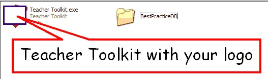
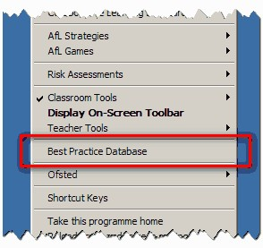
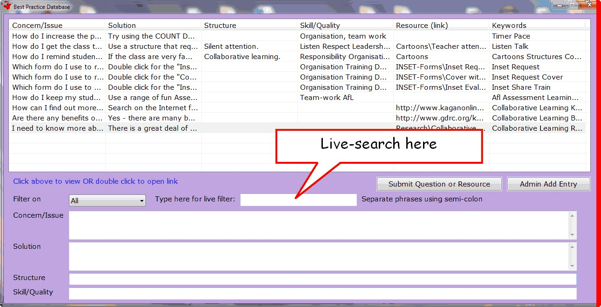
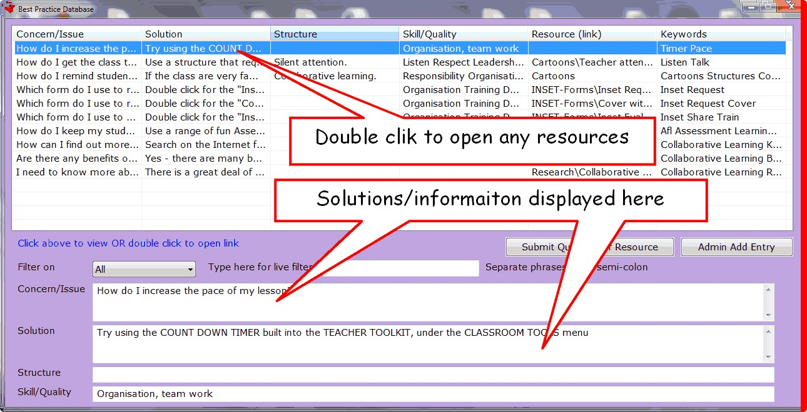
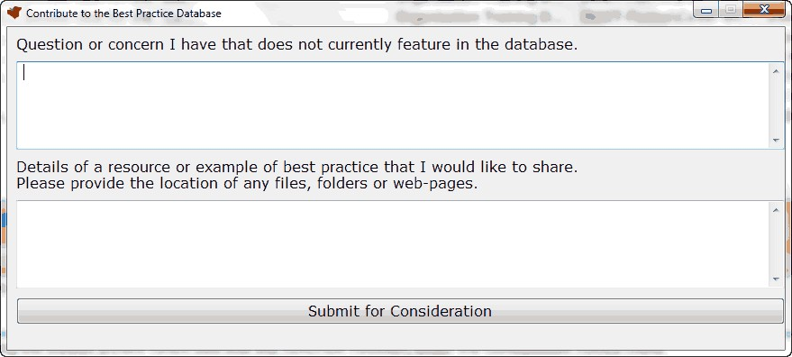

Best Practice Database
(Shortcut Key = WindowsKey and B)
(ALTERNATE SHORTCUT KEY = ScrollLock and B)
One of the most powerful features of successful schools is the way they share best practice to develop a level of consistency across lessons, that ensure students receive the level of education they are entitled to.
To facilitate this, the Teacher Toolkit provides a database to store outstanding practice and allow teachers to find solutions to problems they may have.
To turn this on, simple create a folder next to the Teacher Toolkit called BestPracticeDB:

The next time the Teacher Toolkit is opened, it will detect this folder and create a new menu item:

When you click this, it opens the database:

It has a live-filter that finds suitable entries as you type.
You can search for a range of phrases by separating each one with a semi-colon, e.g.:
talking over the teacher
Will search for the phrase "talking over the teacher"
Whereas:
talking over; teacher; lesson
Will search for "talking over" as one phrase, then "teacher" as a second prase, and "lesson" as a third phrase.
When you click on an entry, it displays the best practice in the boxes below:

If you double-click an entry, it will open any resources linked to the entry.
[Alternatively - you can scroll between entries using the up/down cursors - and press enter to open links]
The links can include:
•Files - e.g. Word-documents, PDF-files, PowerPoints, etc.
•Media - e.g. Images, movies, audio-files
•Folders - entire folders containing a host of files and resources
•Internet Sites
If you can't find a suitable resource, you can submit a request for help, or share a resource yourself:

These will be sent to the member of your school with ADMINISTRATION privileges for the Teacher Toolkit.